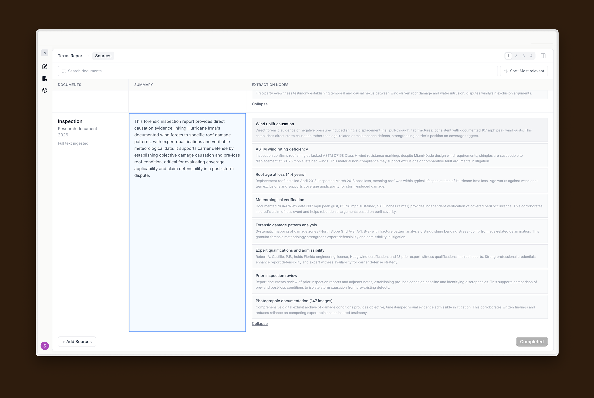
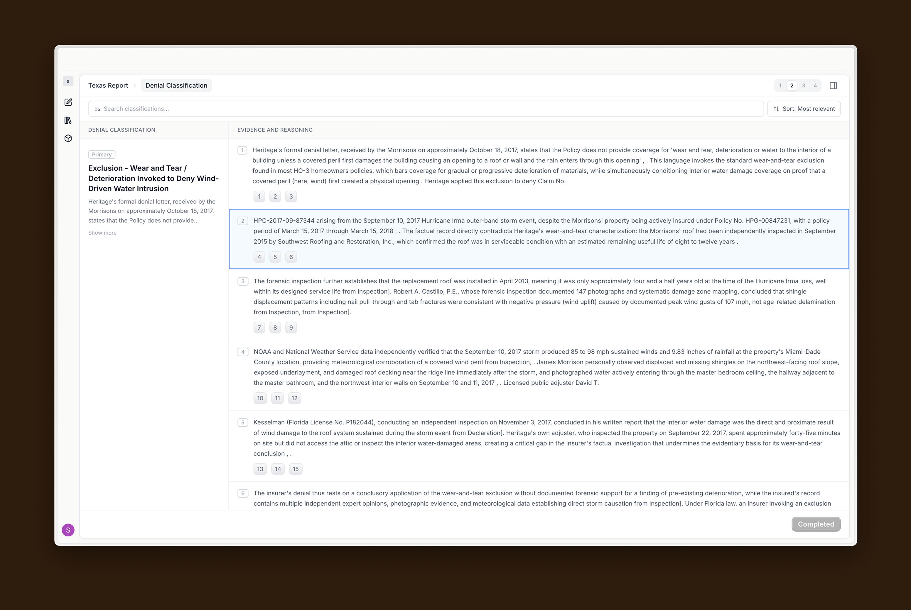
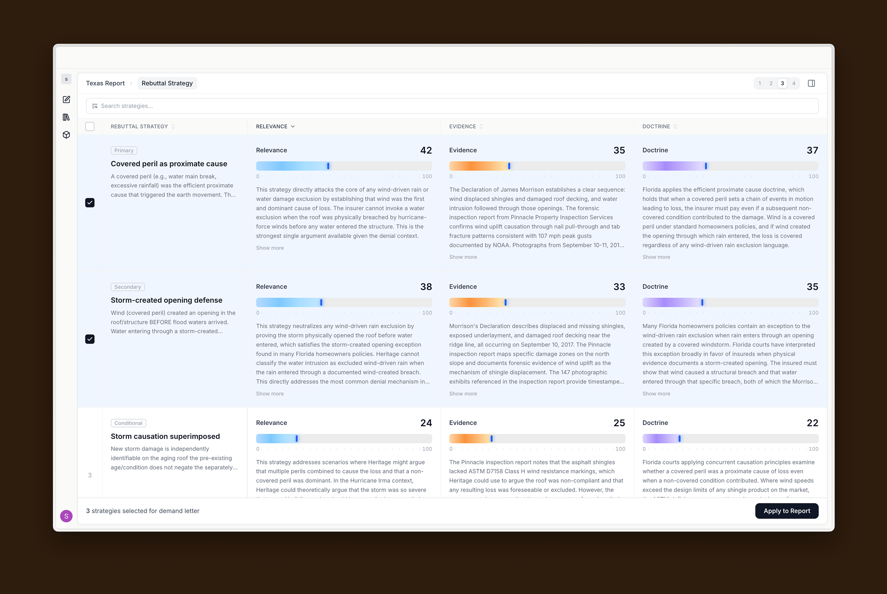
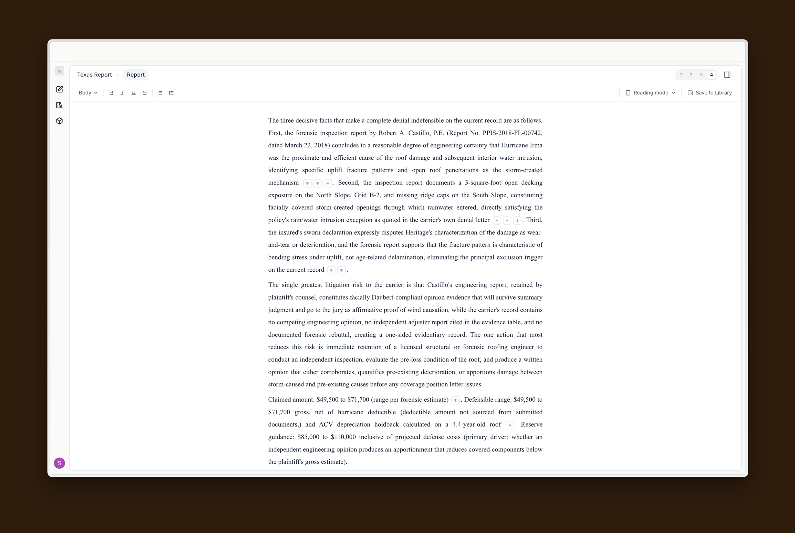
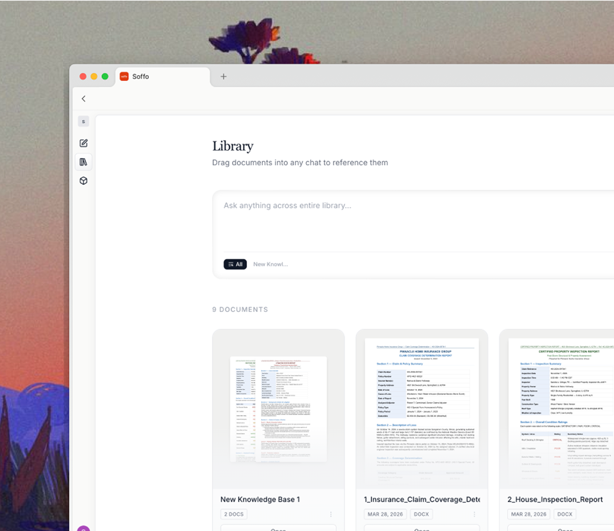

A trusted defensible reasoning layer
for insurance litigation

Classify denials from the
source document
Identifies denial codes by line with explanations grounded in policy language, not generic summaries.
Review denial classifications
before you commit
Each denial activates matched strategies scored on relevance, evidence, and doctrines.


Draft demand letters from
your strongest strategies
Select rebuttals. Soffo assembles coverage arguments and procedural timelines into a structured draft.
Every argument traced to evidence.
Every gap surfaced early.
Maps each strategy to supporting documents and flags what is
missing for stronger case development and clarity.
A trusted defensible reasoning layer
for insurance litigation

Upload documents
Upload documents in any format. Each document is searchable across all cases, allowing knowledge to compound instead of sitting in folders.
Integrations
Connected to Google Workspace, Microsoft 365, and other available integrations to export reports and documents back to your core datastores.

Litigation strategy
Execute a litigation strategy step by step. Track which arguments are supported and which need evidence. Draft with perfect context.